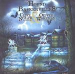

| Artist: | Clive Nolan And Oliver Wakeman |
| Title: | The Hound Of The Baskervilles |
| Label: | Verglas Music VGCD022 |
| Length(s): | 68 minutes |
| Year(s) of release: | 2002 |
| Month of review: | [03/2002] |
| 1) | Overture | 5.57 |
| 2) | The Curse Of The Baskervilles | 6.14 |
| 3) | Three Broken Threads | 4.37 |
| 4) | Shadows Of Fate | 7.01 |
| 5) | At Home In The Mire | 4.52 |
| 6) | Run For Your Life | 4.52 |
| 7) | Picture Of A Lady | 3.41 |
| 8) | The Argument | 4.48 |
| 9) | Second Light | 2.00 |
| 10) | Seldon | 4.57 |
| 11) | By Your Side | 3.32 |
| 12) | Waiting | 5.29 |
| 13) | Chasing The Hound | 4.34 |
The Curse Of The Baskervilles is sung by the character Mortimer. The verses of this track feature harpsichord and are melodic and a bit bouncy. The chorus is dramatic and powerful (as are the vocals), like Arena at their most bombastic. Three Broken Threads is a a typical "chase" track in which a rousing violin and loud church organ vie for your attention. Again, the music is melodically very satisfying. In the middle the band plays around a bit on the keyboards with a playful solo on the keyboards. A bit in the eighthies style. The drums are maybe a bit too loud into the mix. After the keyboard solo part the music makes a turn for the classical. A bit in Vivaldi style: swirling and up-beat.
Shadow Of Fate features melodic, a bit romantic piano. Catley now enters the stage with a plodding vocal melody against the backdrop of a rhythm guitar laced with orchestral synth strings. My favourite passage so far, the chorus has a grand vocal melody which has something of Arena, but combined with the story telling feel of a musical/rock opera song. In the middle section, the vocal part reminds of Magnum.
At Home In The Mire is a rather poppy track and is sung by Stapleton. The song also has some more moody aspects, something that is true for the entire album. The energetic chorus is again a good one with a good vocal melody and energetic pacey keys. The electric guitar also gets some place to solo (not too long). Miss Beryl Stapleton aka Tracy Hitchings features on Run For Your Life with again an accessible vocal chorus, but also including extensive piano playing and also a rather active guitar solo at the end.
A romantic ballad in a rock opera/musical such as this cannot be lacking. This vocal track which includes romantic tones from ex-Quidam flutist Ewa, reminds me most of Neil Diamond, also because of Catley's vocals on this track. A bit too sugary for me.
The Argument is the first track where more than one vocalist is present: Catley, Hitchings and Paul Allison. Fully orchestrated, the vocals of all singers start apart but later more and more come together. I like Tracy's vocals better when they are not set apart: her vocals seem to me a bit overly dramatic.
Second Light is a moody instrumental with a wailing guitar. I got to thinking of Landmarq's The Overlook here. Seldon itself opens with a rocking guitar and in its bombastic moments reminds most of Arena. Plenty of dark organ in this one as well. The guitar playing, recognizably Arjen Lucassen, is sharp and varied, a bit spaceous too. The scond part of the track is more easy-going, somber with plenty of acoustic guitar and a brimming organ. Then the more rocking part returns. Death On The Moor features a monotonously pumping bass and somewhat eerie tones on the keyboards, and which also features a an Arabic styled theme from earlier.
We come now to By Your Side which features the vocals of Michelle Young. Piano and vocals reign on this sugary song with a Michelle also doing the backing vocals. Waiting is a dark plodding track with plenty of vocals of the various people in the play. The story is now reaching its conclusion as the cast is waiting on the path, waiting for the hound.
The final track is Chasing The Hound in which Sir Henry leaves the group and the hound finally appears. This is manic percussive part to give live to the chase. The keyboards is a bit too tinny at first, but the guitar accents and meandering organ make up for that later. After the death of the hound, the album closes in all-out bombastic style.